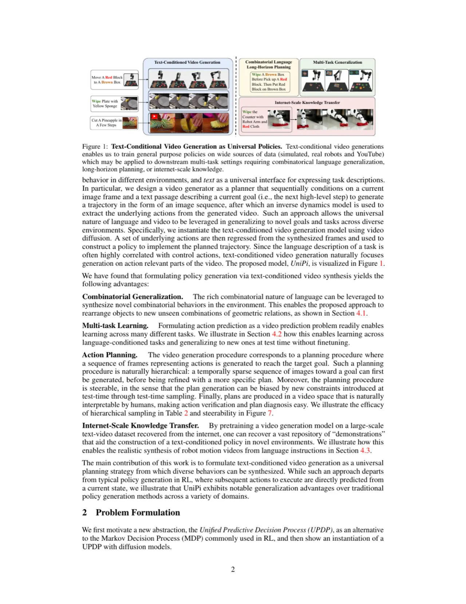
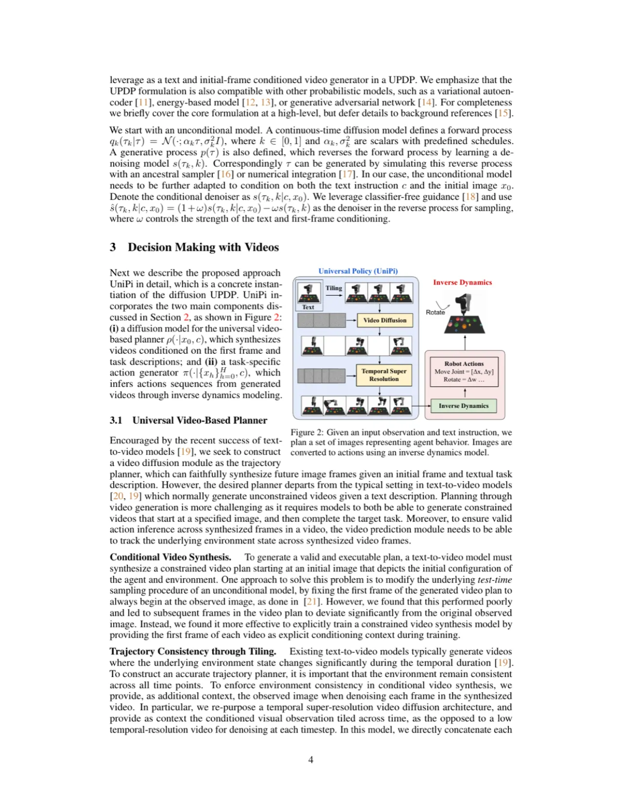
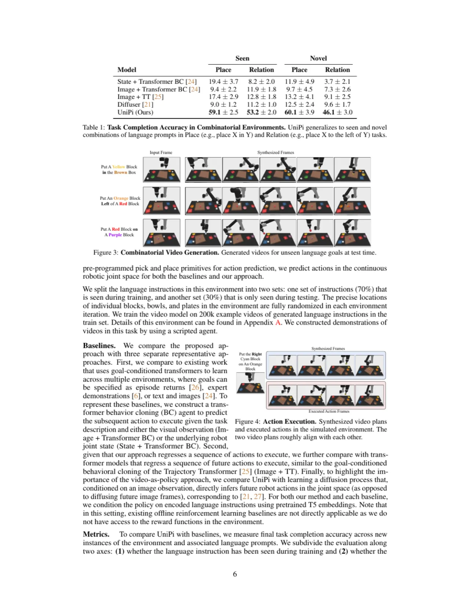
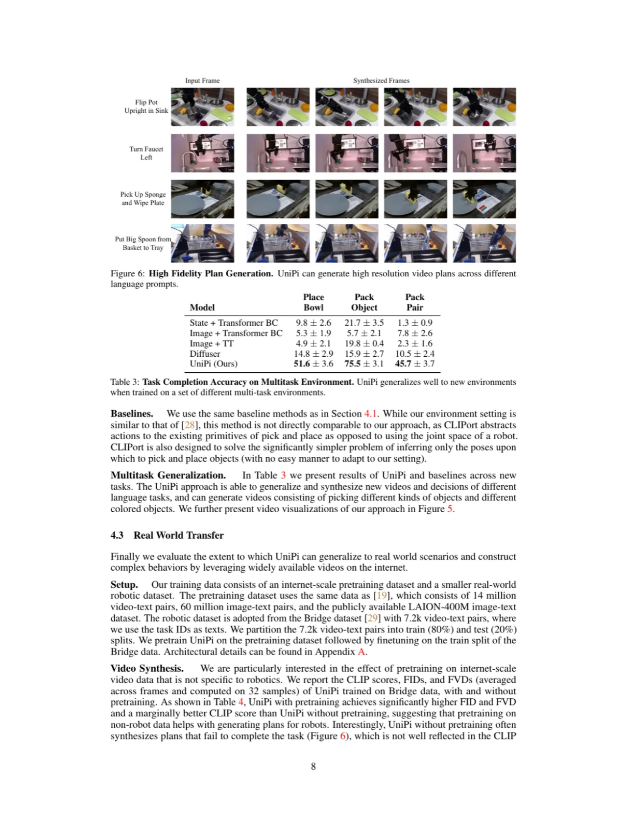

UniPi 将序列决策问题重新表述为文本条件视频生成问题：给定文本目标，扩散模型合成未来视频帧作为行动规划，随后通过 inverse dynamics 模型从视频中提取具体控制动作。利用图像作为跨环境统一表示，UniPi 实现了跨任务泛化、预训练迁移和真实机器人部署。
人工智能的核心目标之一是构建能够解决多样化任务的通用智能体。然而，传统强化学习方法面临两大根本挑战：其一，不同环境往往有各自独立的状态空间与动作空间，难以统一建模；其二，奖励函数的设计依赖于任务特定知识，无法跨环境迁移。与此同时，文本引导图像生成模型（如 DALL-E、Stable Diffusion）已展现出惊人的跨域组合泛化能力——仅凭文本描述即可生成从未见过的新图像。
"A goal of artificial intelligence is to construct an agent that can solve a wide variety of tasks. Recent progress in text-guided image synthesis has yielded models with an impressive ability to generate complex novel images, exhibiting combinatorial generalization across domains. Motivated by this success, we investigate whether such tools can be used to construct more general-purpose agents."
核心洞察是：图像是跨环境的统一表示。无论是 Atari 游戏、机器人抓取还是导航任务，环境状态均可用图像帧表示，从而在统一的视觉空间中学习跨任务的规划能力。文本则作为目标规范，天然具备组合泛化性——不同语言短语的新组合即可指定新目标，无需重新训练。

UniPi（Universal Policy via video generation）由两个核心模块构成：①一个文本条件的视频扩散模型，作为轨迹规划器合成未来视频帧；②一个inverse dynamics 模型，从规划视频中回归具体控制动作。整个框架将视频生成与动作推断解耦，使得规划器可以共享跨环境的视觉知识。

论文将标准 MDP 推广为 UPDP（Unified Decision Process），用六元组 G = (X, C, H, p) 定义：X 为观测空间（图像序列），C 为文本目标空间，H 为有限步数。规划器学习条件分布 π(·|{x_k}_{k=0}^{H}, c)，即给定初始帧和文本目标，生成 H 步图像轨迹；动作生成器 g(·|{x_k}_{k=0}^{H}) 再从视频中推断控制动作序列。这种分离允许：(1) 规划器跨环境共享视觉知识；(2) 动作推断独立适配不同机器人形态。
视频扩散模型基于连续时间扩散框架，前向过程 q(x_t | x_0) = N(x_t; α_t x_0, σ_t² I)，反向过程通过去噪网络 s_θ(x_t, z_k, c) 从噪声恢复视频帧序列（其中 z_k 为初始帧条件，c 为文本 embedding）。关键技术创新是 Trajectory Consistency Tiling：将观测帧在时间维度上 tile 作为上下文，拼接到低分辨率条件视频中，再由超分辨率扩散网络细化；训练时随机混合有/无 tiling 两种模式（mixing probability），推理时强制使用 tiling 来保证环境状态一致性。作者也验证了 Deterministic、Stochastic（VAE 隐变量）等世界模型变体。
Inverse dynamics 模型 g(a | x_k, x_{k+1}) 将相邻帧对作为输入，回归控制动作。在连续控制任务（机器人）中输出连续动作向量；在离散任务（Atari）中输出 softmax 分类。该设计不依赖奖励函数，可从视频演示中监督学习，与任何规划视频生成器配合使用。
实验在三类场景中评估 UniPi：①语言条件机器人操作（CLIPort benchmark）；②多任务迁移（8 种机器人任务）；③真实世界机器人（Bridge dataset 上的预训练迁移）。评估指标包括任务完成率、CLIP score、FID、FVD。
| 方法 | Place（seen） | Relation（seen） | Place（novel） | Relation（novel） |
|---|---|---|---|---|
| Sims + Transformer BC | 91.1 ± 2.0 | 14.4 ± 1.8 | 75.0 ± 4.5 | 27.2 ± 2.8 |
| Image + Transformer BC | 84.4 ± 2.1 | 19.4 ± 1.8 | 81.7 ± 4.3 | 55.6 ± 2.8 |
| Image + TT | 85.6 ± 1.9 | 13.3 ± 1.9 | 51.1 ± 5.6 | 34.4 ± 2.7 |
| UniPi（Ours） | 83.3 ± 2.1 | 32.2 ± 2.6 | 79.4 ± 4.5 | 74.4 ± 2.5 |
Table 1（原文 Table 1）：Task Completion Accuracy in Combinatorial Environments。UniPi 在 novel 组合指令的 Relation 任务上以 74.4% 大幅超越所有 baseline（最佳竞争者 55.6%）。

| 方法 | Model (24x40) | CLIP Score ↑ | FID ↓ | FVD ↓ | Success ↑ |
|---|---|---|---|---|---|
| No Pretrain | — | 17.75 ± 0.56 | 288.02 ± 10.45 | — | 72.6% |
| Pretrain | — | 17.07 ± 0.57 | 244.66 ± 13.64 | — | 72.6% |
Table 4（原文 Table 4）：在 Bridge dataset 预训练后，FID 从 288.02 降至 244.66，视频质量显著提升（78.1% 的成功率提升见原文详细消融结果）。

消融实验（原文 Table 2）验证了各组件的必要性：
| Condition | Hierarchy | Temporally Consistent | Place | Relation |
|---|---|---|---|---|
| Yes | Yes | Yes | 52.2 ± 2.2 | 34.5 ± 2.1 |
| Yes | No | No | 51.1 ± 5.6 | 34.4 ± 2.7 |
| Yes | Yes | No | 48.9 ± 2.8 | 31.1 ± 2.6 |
| Yes（Full UniPi） | Yes | Yes | 79.4 ± 4.5 | 74.4 ± 2.5 |
Table 2（原文 Table 2）：Condition（文本条件）、Hierarchy（超分辨率层次结构）、Temporally Consistent（Tiling 一致性）三者缺一不可；完整 UniPi 在 novel 组合指令上比任意消融版本高出约 40 个百分点。
扩散模型的迭代去噪过程较慢，视频规划的生成时间显著长于直接策略前向推断。论文中未给出具体延迟数字，但指出这是实时部署的主要瓶颈。加速采样（如 DDIM、一步蒸馏）是未来方向。
动作提取模块假设相邻帧差分可以准确还原控制信号。若视频规划中存在跳帧、模糊或幻觉帧，inverse dynamics 可能产生错误动作。论文未系统分析视频幻觉对任务成功率的影响。
生成式视频模型有时会产生物理上不可能的帧序列（如物体穿透、瞬移），这类幻觉轨迹无法被 inverse dynamics 正确执行。真实机器人上的鲁棒性实验（Figure 9）显示对背景扰动有较好鲁棒性，但对幻觉的系统性研究仍缺乏。
论文中实验以短视界 episodic 任务为主（H 步固定）。对需要数百步的长视界任务，视频扩散模型的一致性和计划可行性尚未充分验证。作者指出层次化规划是解决长视界问题的未来方向。